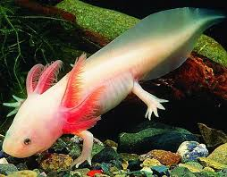

L'axolotl
L'Ambystoma mexicanum Shaw, 1789, comunemente chiamato axolotl o assolotto, è una salamandra neotenica (compie l'intero ciclo vitale allo stadio di larva) che vive nel lago di Xochimilco, nei pressi di Città del Messico. è considerato una specie probabilmente estinta in natura, per diversi fattori quali la pesca, l'inquinamento e la distruzione dell'habitat ma è allevato come esotico animale domestico, ed è dunque possibile ammirare ancora il suo peculiare aspetto.
Il nome deriva dal nahuatl a'tl-xolotl, che vuol dire mostro acquatico, questo dipende probabilmente dal peculiare aspetto della creatura: sono piccole salamandre dotate di una grande testa decorata ai lati da diverse branchie esterne dalla forma di piume.
Un adulto sessualmente maturo di axolotl, tra i 18 e i 24 mesi di vita, varia dai 15 ai 45 cm di lunghezza, anche se mediamente vengono trovati esemplari lunghi 23 cm e trovarne uno sopra i 30 cm è abbastanza raro.
La testa dell'axolotl è ampia e gli occhi non hanno palpebre. Gli arti sono sottosviluppati e posseggono dita lunghe e sottili. I maschi si differenziano dalle femmine per l'ampio canale genitale mentre le femminie riescono a riempire il proprio corpo di uova al momento della riproduzione. Tre paia di branchie si trovano dietro la testa e vengono utilizzate per smuovere e ossigenare l'acqua, mentre quattro branchie esterne allineate alle branchie anteriori si trovano nascoste nella parte posteriore.
Gli axolotl hanno denti rudimentali a malapena visibili che potrebbero essere nati durante un processo di metamorfosi dell'animale: questi animali si nutrono principalmente per suzione grazie anche all'azione delle branchie anteriori che vengono utilizzate per bloccare la preda. Le branchie posteriori sono usate per la respirazione, anche se l'axolotl può respirare anche ingoiando l'aria dalla superficie esterna.
Gli axolotl hanno quattro differenti pigmentazioni che nel momento della muta possono creare differenti varianti. Normalmente il colore della pelle è marrone scuro con macchioline dorate e un sottotono olivastro. I quattro differenti tipi sono leucistico (rosa pallido con occhi neri), albino (dorato con occhi dorati), assantico (grigio con occhi neri) e melanoide (tutto nero senza macchie dorate o sottotono olivastro). In aggiunta a queste varianti c'è un'ampia varietà nella grandezza, nella frequenza e nell'intensità delle macchie dorate e una mutazione che porta alla formazione di un mantello pezzato bianco e nero una volta raggiunta la maturità. Gli axolotl hanno anche una limitata capacità di alterare i colori della propria livrea per mimetizzarsi meglio nell'ambiente circostante.